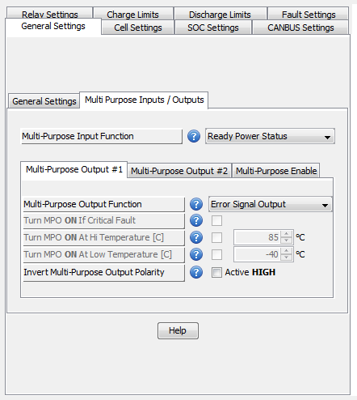

 These settings deal with the configuration of the multi-purpose input / output pins available on the Orion JR.
Associated Parameters:
Multi Purpose Input Functions
Multi Purpose Output Functions
Multi Purpose Enable Functions